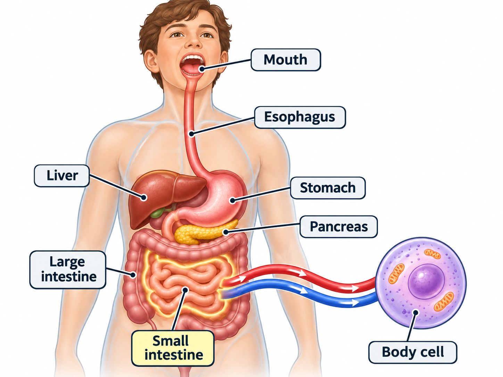

Inside the Digestive System
Follow food and nutrients as they travel through the body.

—Food
—Nutrients
—Energy
Start the investigation by selecting a meal.
Investigation Lab
Adjust controls, observe changes, and discover how cells receive materials.